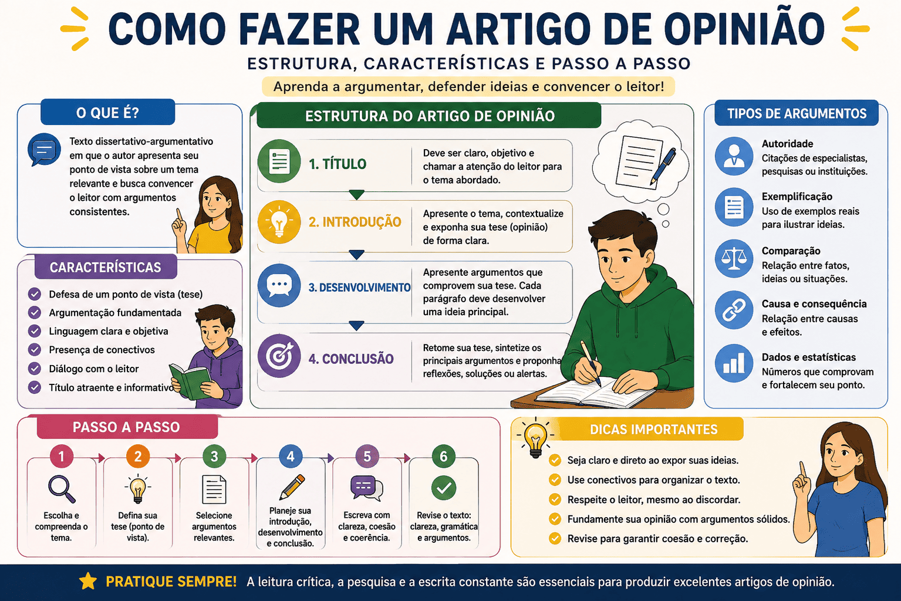

Como Fazer um Artigo de Opinião: Estrutura, Características, Exemplos e Passo a Passo
Saber como fazer um artigo de opinião é fundamental para estudantes que precisam produzir textos argumentativos em atividades escolares, vestibulares, concursos e diferentes situações de comunicação.
Nesse gênero textual, o autor apresenta seu posicionamento sobre um assunto relevante e procura convencer o leitor por meio de argumentos, exemplos, dados, comparações e outras estratégias argumentativas.
Entretanto, não basta apenas expressar uma opinião pessoal. Um bom artigo precisa apresentar uma tese clara, argumentos consistentes, organização entre os parágrafos, linguagem adequada ao público e uma conclusão coerente com o posicionamento defendido.
Neste conteúdo, você aprenderá o que é um artigo de opinião, quais são suas principais características, como organizar sua estrutura e como produzir cada parte do texto. Também encontrará exemplos, modelos, conectivos, erros frequentes e uma questão comentada.

O que é um artigo de opinião?
O artigo de opinião é um gênero textual argumentativo no qual o autor apresenta e defende seu ponto de vista a respeito de um tema socialmente relevante.
Esse gênero é encontrado em jornais, revistas, portais de notícias, blogs, sites educacionais e outros espaços de circulação de ideias. Seu principal objetivo é levar o leitor a refletir sobre determinado assunto e, em muitos casos, convencê-lo a concordar com a posição apresentada.
Para isso, o articulista não deve se limitar a afirmar aquilo que pensa. É necessário sustentar a opinião por meio de argumentos capazes de demonstrar que o posicionamento possui fundamento.
Artigo de opinião é um texto argumentativo em que o autor apresenta uma tese sobre um tema relevante e procura defendê-la por meio de argumentos, exemplos, informações e análises.
Qual é a finalidade do artigo de opinião?
A principal finalidade do artigo de opinião é defender um ponto de vista. Ao escrever, o autor procura influenciar a maneira como o leitor interpreta determinado problema, acontecimento ou questão social.
Dependendo do tema e do contexto de publicação, o artigo pode:
- criticar um comportamento ou uma decisão;
- defender uma mudança social;
- analisar um problema;
- questionar uma prática;
- apresentar soluções;
- incentivar a reflexão;
- convencer o leitor a adotar determinado posicionamento.
Assim, a opinião apresentada deve estar acompanhada de justificativas. Quanto mais consistentes forem os argumentos, maior será a capacidade de convencimento do texto.
Quais são as características do artigo de opinião?
O artigo de opinião possui características próprias que permitem diferenciá-lo de outros gêneros, como a notícia, o editorial, a crônica e a dissertação escolar.
Principais características do artigo de opinião
- abordagem de um tema atual, relevante ou controverso;
- presença de um posicionamento definido;
- apresentação de uma tese;
- desenvolvimento de argumentos;
- tentativa de convencer ou influenciar o leitor;
- linguagem adequada ao público e ao veículo de publicação;
- possibilidade de uso da primeira ou da terceira pessoa;
- presença de título;
- identificação do autor;
- conclusão coerente com a opinião defendida.
Opinião não significa falta de fundamentação
O autor pode apresentar seu posicionamento pessoal, mas precisa justificá-lo. Frases como “eu acho isso errado” ou “na minha opinião, isso é ruim” não são suficientes quando aparecem sem explicação ou argumentação.
Qual é a estrutura de um artigo de opinião?
A estrutura pode variar conforme o veículo de publicação, o público e a extensão solicitada. Entretanto, o artigo de opinião geralmente apresenta três partes fundamentais:
| Parte | Função no texto | O que pode apresentar |
|---|---|---|
| Introdução | Apresentar o tema e o posicionamento do autor. | Contextualização, problema, tese ou questionamento. |
| Desenvolvimento | Defender a tese por meio de argumentos. | Exemplos, dados, fatos, comparações, causas e consequências. |
| Conclusão | Encerrar o raciocínio e reforçar o posicionamento. | Síntese, reflexão, proposta, alerta ou convocação. |
Estrutura básica: apresente sua opinião na introdução, desenvolva os argumentos nos parágrafos seguintes e encerre retomando o posicionamento defendido.
Como fazer um artigo de opinião passo a passo?
Antes de iniciar a escrita, é importante compreender que um artigo de opinião não deve ser produzido de maneira improvisada. O planejamento ajuda a selecionar argumentos, evitar repetições e manter o texto dentro do tema.
A seguir, veja as principais etapas de produção.
1. Leia e compreenda a proposta
Quando o artigo for solicitado em uma atividade, leia atentamente o comando de produção. Identifique o assunto, o recorte, a situação comunicativa, o público e o objetivo do texto.
Procure responder às seguintes perguntas:
- Sobre qual assunto devo escrever?
- Qual problema precisa ser discutido?
- Para quem o artigo será escrito?
- Em qual veículo ele será publicado?
- Qual posicionamento posso defender?
- Que informações fornecidas pela proposta podem ser utilizadas?
Assunto geral: uso de celulares.
Recorte: utilização de celulares pelos estudantes durante as aulas.
Público: comunidade escolar.
Possível tese: o celular pode ser utilizado na escola, desde que exista planejamento pedagógico e orientação adequada.
Não escreva apenas sobre o assunto geral
Caso a proposta solicite uma discussão sobre o uso de celulares durante as aulas, não basta escrever genericamente sobre tecnologia. O texto precisa abordar o recorte apresentado.
2. Defina seu posicionamento
Depois de compreender a proposta, decida qual opinião será defendida. O posicionamento precisa ser claro e permanecer coerente ao longo de todo o artigo.
Em alguns temas, o autor pode adotar uma posição completamente favorável ou contrária. Em outros, pode apresentar um ponto de vista mais equilibrado, reconhecendo benefícios e problemas.
Tema: uso de celulares nas escolas.
Posicionamento favorável: os celulares devem ser utilizados como ferramentas pedagógicas.
Posicionamento contrário: os celulares devem ser proibidos durante as aulas por prejudicarem a concentração.
Posicionamento equilibrado: os celulares podem ser utilizados, mas apenas em atividades orientadas pelos professores.
Escolha uma posição que consiga defender
Antes de definir sua opinião, verifique se você possui argumentos, exemplos e informações suficientes para sustentá-la.
3. Formule uma tese
A tese é a ideia central defendida pelo autor. Ela transforma uma opinião genérica em um posicionamento argumentativo.
Uma boa tese deve ser:
- clara;
- específica;
- relacionada ao tema;
- passível de defesa;
- coerente com os argumentos escolhidos.
Opinião vaga
O celular na escola é um assunto importante.
A frase apenas menciona o tema, mas não apresenta um posicionamento.
Tese delimitada
O uso pedagógico do celular deve ser permitido nas escolas, pois amplia o acesso à informação e possibilita novas estratégias de aprendizagem.
A frase apresenta uma posição e indica argumentos que poderão ser desenvolvidos.
Uma tese eficiente responde: o que penso sobre o tema e por quais razões defendo esse posicionamento?
4. Escolha argumentos consistentes
Os argumentos são as razões utilizadas para demonstrar que a tese possui fundamento. Eles precisam explicar por que o leitor deveria aceitar ou considerar válido o posicionamento do autor.
É preferível desenvolver poucos argumentos de maneira aprofundada a apresentar muitas ideias superficiais.
Planejamento dos argumentos
- Tese: o uso pedagógico do celular deve ser permitido nas escolas.
- Argumento 1: o aparelho facilita o acesso a materiais educacionais.
- Argumento 2: recursos digitais podem tornar as aulas mais interativas.
- Contraponto: o uso sem orientação pode causar distrações.
- Resposta ao contraponto: regras claras e acompanhamento docente podem reduzir o problema.
Quais tipos de argumentos podem ser utilizados?
Existem diferentes maneiras de defender uma tese. A escolha dependerá do tema, das informações disponíveis e do objetivo do texto.
| Tipo de argumento | Como funciona | Exemplo de aplicação |
|---|---|---|
| Argumento de autoridade | Utiliza a opinião ou o conhecimento de especialistas e instituições. | Uma pesquisa educacional demonstra os benefícios do uso orientado da tecnologia. |
| Argumento por exemplificação | Apresenta situações concretas que comprovam uma ideia. | Escolas podem utilizar aplicativos para realizar atividades e pesquisas. |
| Argumento por comparação | Compara duas situações para evidenciar diferenças ou semelhanças. | Uma aula com recursos interativos pode estimular mais participação do que uma atividade exclusivamente expositiva. |
| Argumento de causa e consequência | Explica os motivos e os efeitos de determinado problema. | A falta de orientação pode fazer com que o celular se transforme em fonte de distração. |
| Argumento com dados | Utiliza números e resultados de pesquisas. | Dados sobre acesso à internet podem demonstrar a presença da tecnologia na vida dos estudantes. |
| Argumento baseado em princípios | Recorre a valores, direitos, leis ou princípios sociais. | A educação deve preparar os estudantes para utilizar criticamente as tecnologias. |
Não invente informações
Dados, pesquisas e declarações de especialistas devem ser utilizados com responsabilidade. Caso você não conheça números exatos, desenvolva o argumento sem criar estatísticas ou atribuir informações falsas a instituições.
```5. Organize um projeto de texto
Antes de escrever o artigo completo, faça um pequeno planejamento. Esse projeto ajuda a visualizar a função de cada parágrafo.
Exemplo de projeto de texto
- Introdução: apresentar a presença dos celulares na vida dos estudantes e defender seu uso pedagógico.
- Desenvolvimento 1: explicar como o celular amplia o acesso a conteúdos e materiais educacionais.
- Desenvolvimento 2: mostrar que atividades digitais podem aumentar a participação dos alunos.
- Desenvolvimento 3: reconhecer o risco de distração e defender regras para a utilização.
- Conclusão: reafirmar que a tecnologia deve ser orientada, e não simplesmente proibida.
Planeje antes de redigir
Reservar alguns minutos para definir tese, argumentos e conclusão reduz o risco de contradição e repetição.
```Como fazer a introdução de um artigo de opinião?
A introdução apresenta o tema e encaminha o posicionamento do autor. Ela precisa despertar o interesse do leitor e preparar a discussão que será desenvolvida.
Uma introdução pode começar por:
- apresentação direta do problema;
- contextualização histórica;
- referência a um acontecimento atual;
- pergunta reflexiva;
- contraste entre duas situações;
- apresentação de dado relevante;
- descrição breve de uma situação cotidiana.
Exemplo de introdução direta
A presença dos celulares nas escolas tornou-se motivo de preocupação entre professores, estudantes e responsáveis. Embora o uso sem controle possa prejudicar a concentração, a proibição completa ignora as possibilidades pedagógicas oferecidas pelos recursos digitais. Por isso, esses aparelhos devem ser incorporados às aulas de maneira planejada e orientada.
Exemplo de introdução com questionamento
Em uma sociedade cada vez mais conectada, proibir completamente o uso de celulares nas escolas seria realmente a melhor solução? Apesar dos riscos de distração, esses aparelhos podem facilitar pesquisas, ampliar o acesso à informação e diversificar as atividades pedagógicas. Dessa forma, o problema não está na tecnologia em si, mas na ausência de orientação para utilizá-la.
Apresente o posicionamento desde o início
O leitor não deve terminar a introdução sem compreender qual opinião será defendida no artigo.
Como desenvolver os argumentos?
O desenvolvimento é a parte em que o autor sustenta sua tese. Cada parágrafo deve apresentar uma ideia central e explicá-la de maneira organizada.
Uma estrutura eficiente para o parágrafo argumentativo pode conter:
- apresentação do argumento;
- explicação;
- exemplo, dado ou referência;
- análise;
- relação com a tese.
Modelo de parágrafo argumentativo
Em primeiro lugar, [apresente o argumento]. Isso ocorre porque [explique a ideia]. Por exemplo, [apresente uma situação concreta]. Esse cenário demonstra que [analise o exemplo]. Portanto, [relacione o argumento ao posicionamento defendido].
Exemplo de desenvolvimento
Em primeiro lugar, os celulares podem ampliar o acesso dos estudantes a materiais educacionais. Por meio desses aparelhos, é possível consultar dicionários, vídeos, livros digitais, mapas e plataformas de aprendizagem durante as atividades. Quando utilizados sob orientação docente, esses recursos complementam as explicações e permitem que os alunos busquem informações de maneira mais autônoma. Assim, a tecnologia pode contribuir para a construção do conhecimento.
Não apresente apenas uma sequência de afirmações
Um argumento precisa ser explicado. Sempre procure mostrar por que determinada situação acontece, quais são suas consequências e como ela se relaciona ao posicionamento do artigo.
Como aprofundar um argumento?
Muitos textos apresentam boas ideias, mas não alcançam profundidade porque o autor passa rapidamente de um argumento para outro.
Para desenvolver melhor uma ideia, faça perguntas ao próprio argumento:
- Por que isso acontece?
- Como essa situação ocorre?
- Quem é afetado?
- Quais são as consequências?
- Que exemplo confirma essa ideia?
- Existe um ponto de vista contrário?
- Como esse argumento comprova minha tese?
Argumento superficial
O celular ajuda os alunos a estudar.
Argumento aprofundado
O celular pode contribuir para os estudos porque permite o acesso rápido a livros, vídeos, dicionários e plataformas educacionais. Com a orientação do professor, esses recursos complementam o conteúdo trabalhado e tornam a pesquisa mais dinâmica.
O que é contra-argumentação?
A contra-argumentação ocorre quando o autor considera uma ideia contrária à sua tese e apresenta uma resposta capaz de enfraquecê-la.
Essa estratégia demonstra que o articulista conhece diferentes perspectivas sobre o tema e não ignora possíveis objeções.
É verdade que o uso dos celulares pode causar distrações durante as aulas. Entretanto, esse risco não justifica a proibição completa dos aparelhos. Com regras claras, supervisão dos professores e atividades previamente planejadas, é possível reduzir o uso inadequado e aproveitar os benefícios pedagógicos da tecnologia.
Estrutura da contra-argumentação
- apresente o argumento contrário;
- reconheça sua validade parcial;
- mostre seus limites;
- responda com uma justificativa;
- reafirme sua tese.
Como fazer a conclusão de um artigo de opinião?
A conclusão encerra a discussão e reforça a posição defendida. Ela não deve apresentar um argumento completamente novo nem repetir de maneira idêntica tudo o que já foi escrito.
O autor pode concluir o artigo por meio de:
- reafirmação da tese;
- síntese dos argumentos;
- proposta de solução;
- alerta;
- questionamento reflexivo;
- convocação do leitor;
- expectativa de mudança.
Exemplo de conclusão
Portanto, o celular não deve ser tratado apenas como um inimigo da aprendizagem. Embora seu uso exija limites, a escola também precisa preparar os estudantes para lidar de forma responsável com as tecnologias presentes na sociedade. Em vez de simplesmente proibir, é necessário ensinar a utilizar esses recursos com consciência, finalidade e equilíbrio.
Retome a ideia central
Ao concluir, releia a tese apresentada na introdução e verifique se o encerramento responde ao posicionamento inicialmente defendido.
O artigo de opinião precisa ter título?
Sim. O título é um elemento importante porque apresenta o assunto, desperta a curiosidade e antecipa a perspectiva do autor.
Um bom título deve ser:
- relacionado ao conteúdo;
- claro;
- objetivo;
- atrativo;
- coerente com o posicionamento defendido.
Título muito amplo
A tecnologia
Título mais específico
Celular na escola: proibir ou ensinar a usar?
Exemplos de títulos para artigo de opinião
- Celular na escola: ferramenta ou distração?
- Proibir não ensina a usar
- Tecnologia e educação precisam caminhar juntas
- A escola diante dos desafios do mundo digital
- Por que o celular pode contribuir para a aprendizagem?
Qual linguagem deve ser utilizada?
A linguagem do artigo de opinião depende do público, do veículo e da situação comunicativa. Em geral, deve ser clara, organizada e adequada à norma-padrão.
O autor pode utilizar recursos como:
- perguntas retóricas;
- exemplos;
- comparações;
- marcas de avaliação;
- verbos que indicam posicionamento;
- expressões de certeza, possibilidade ou crítica;
- diálogo com o leitor.
Expressões que podem indicar posicionamento:
- é necessário;
- é importante considerar;
- não se pode ignorar;
- torna-se evidente;
- é preciso reconhecer;
- é preocupante;
- dificilmente haverá mudança sem;
- cabe à sociedade refletir.
Evite agressões e ataques pessoais
Defender uma opinião não significa ofender pessoas ou grupos. O texto deve criticar ideias, decisões e comportamentos por meio de argumentos, sem recorrer a insultos.
Pode usar primeira pessoa no artigo de opinião?
Sim. Diferentemente de algumas propostas de redação escolar, o artigo de opinião pode apresentar marcas de primeira pessoa, especialmente quando o autor assume explicitamente seu posicionamento.
Primeira pessoa do singular: considero que a proibição completa não resolve o problema.
Primeira pessoa do plural: precisamos discutir de que maneira a tecnologia pode ser incorporada à educação.
Construção impessoal: é necessário discutir de que maneira a tecnologia pode ser incorporada à educação.
A escolha dependerá da proposta. Em atividades escolares, é importante verificar se existe alguma orientação específica sobre o uso da primeira pessoa.
Conectivos para artigo de opinião
Os conectivos ajudam a estabelecer relações entre frases, períodos e parágrafos. Entretanto, eles devem ser utilizados de acordo com o sentido pretendido.
| Relação de sentido | Conectivos e expressões |
|---|---|
| Introdução do assunto | Atualmente, nos últimos anos, diante desse cenário, em nossa sociedade. |
| Adição | Além disso, também, ainda, ademais, do mesmo modo. |
| Explicação | Isso ocorre porque, uma vez que, visto que, pois. |
| Causa | Em razão de, devido a, por causa de, como resultado de. |
| Consequência | Por isso, dessa forma, como consequência, desse modo. |
| Exemplificação | Por exemplo, como se observa, isso pode ser percebido em. |
| Oposição | Entretanto, porém, contudo, apesar disso, por outro lado. |
| Concessão | Embora, ainda que, mesmo que, apesar de. |
| Conclusão | Portanto, assim, em síntese, diante do exposto, em conclusão. |
Não escolha conectivos apenas para evitar repetição
Antes de inserir uma expressão, verifique a relação entre as ideias. O uso de “entretanto” exige oposição, enquanto “portanto” indica uma conclusão.
Diferença entre artigo de opinião e dissertação argumentativa
Os dois gêneros defendem um ponto de vista, mas possuem diferenças relacionadas à situação de produção e à forma de circulação.
| Aspecto | Artigo de opinião | Dissertação argumentativa |
|---|---|---|
| Contexto | Circula em jornais, revistas, sites, blogs e outros veículos. | É comum em atividades escolares, vestibulares e concursos. |
| Autoria | O autor costuma ser identificado. | A identificação depende das regras da avaliação. |
| Título | Geralmente é obrigatório. | Pode ser opcional ou proibido, conforme a proposta. |
| Primeira pessoa | Pode ser utilizada. | Muitas propostas priorizam construções impessoais. |
| Interação com o leitor | Pode ocorrer de maneira mais direta. | Geralmente ocorre de maneira mais formal e impessoal. |
| Conclusão | Pode apresentar reflexão, síntese, questionamento ou proposta. | Depende do modelo exigido pela avaliação. |
Tanto o artigo de opinião quanto a dissertação argumentativa precisam apresentar posicionamento, argumentos, coerência e organização.
Diferença entre artigo de opinião e editorial
O editorial também apresenta uma opinião sobre determinado tema. A principal diferença está na autoria.
Artigo de opinião
Apresenta o posicionamento de um autor identificado, que assume responsabilidade pelas ideias defendidas.
Editorial
Expressa o posicionamento institucional de um jornal, revista ou outro veículo de comunicação e, geralmente, não possui assinatura individual.
Modelo de estrutura para artigo de opinião
Modelo de planejamento
- Título: apresente o tema de maneira clara e atrativa.
- Introdução: contextualize o assunto e apresente a tese.
- Desenvolvimento 1: explique o primeiro argumento.
- Desenvolvimento 2: explique o segundo argumento.
- Contra-argumentação: considere uma possível objeção.
- Conclusão: reafirme a tese e apresente uma reflexão ou encaminhamento.
Modelo adaptável
Título: [título relacionado ao posicionamento]
Introdução: Atualmente, [contextualização do tema]. Essa situação gera discussões porque [apresentação do problema]. Nesse contexto, [apresentação da tese].
Desenvolvimento 1: Em primeiro lugar, [apresentação do argumento]. Isso ocorre porque [explicação]. Por exemplo, [exemplo]. Dessa forma, [relação com a tese].
Desenvolvimento 2: Além disso, [segundo argumento]. Tal situação pode ser observada quando [exemplo ou explicação]. Como consequência, [efeito relacionado ao problema].
Contra-argumentação: Embora algumas pessoas defendam que [opinião contrária], é necessário considerar que [resposta ao argumento contrário].
Conclusão: Portanto, [retomada da tese]. Mais do que [ideia rejeitada], é necessário [encaminhamento ou reflexão final].
Não copie o modelo de maneira mecânica
A estrutura deve ser adaptada ao tema, ao público e ao objetivo do artigo. Modelos ajudam na organização, mas não substituem o desenvolvimento de ideias próprias.
Exemplo completo de artigo de opinião
Observe um exemplo sobre o tema uso de celulares nas escolas.
Celular na escola: proibir ou ensinar a usar?
A presença dos celulares nas escolas tornou-se motivo de preocupação entre professores, responsáveis e gestores. De fato, notificações, jogos e redes sociais podem prejudicar a concentração dos estudantes. Entretanto, proibir completamente esses aparelhos não parece ser a solução mais educativa. Quando utilizados com planejamento, os celulares podem se transformar em importantes ferramentas de aprendizagem.
Em primeiro lugar, esses dispositivos facilitam o acesso a diferentes materiais educacionais. Durante uma atividade, os estudantes podem consultar dicionários, mapas, vídeos, livros digitais e plataformas de ensino. Sob a orientação do professor, a pesquisa deixa de ser uma ação desorganizada e passa a fazer parte do processo de construção do conhecimento.
Além disso, os recursos digitais podem tornar as aulas mais participativas. Questionários interativos, produção de vídeos, registros fotográficos e pesquisas em grupo são exemplos de atividades capazes de estimular o envolvimento dos alunos. Ignorar essas possibilidades significa afastar a escola de tecnologias que já fazem parte da vida cotidiana.
É evidente que o uso sem limites pode gerar distrações. Contudo, esse problema não será resolvido apenas com a retirada dos aparelhos. A escola também possui a responsabilidade de ensinar os estudantes a utilizar a tecnologia de forma consciente, crítica e equilibrada. Para isso, é necessário estabelecer regras, definir os momentos de uso e acompanhar as atividades.
Portanto, o celular não deve ser visto apenas como obstáculo à aprendizagem. Mais produtivo do que proibir é ensinar a usar. Com planejamento pedagógico, orientação docente e limites claros, a tecnologia pode contribuir para uma escola mais conectada às necessidades do presente.
Análise do exemplo
| Elemento | Como aparece no artigo |
|---|---|
| Título | Apresenta o tema por meio de um questionamento. |
| Contextualização | Apresenta a preocupação com a presença dos celulares nas escolas. |
| Tese | Defende que os celulares podem ser utilizados como ferramentas pedagógicas. |
| Argumento 1 | Os aparelhos facilitam o acesso a materiais educacionais. |
| Argumento 2 | Os recursos digitais podem aumentar a participação dos estudantes. |
| Contra-argumentação | Reconhece o risco de distração, mas defende regras e acompanhamento. |
| Conclusão | Reafirma que ensinar a usar é mais produtivo do que simplesmente proibir. |
Erros mais comuns ao fazer um artigo de opinião
| Erro | Problema causado | Como evitar |
|---|---|---|
| Não apresentar uma tese | O leitor não compreende a posição do autor. | Declare claramente o ponto de vista na introdução. |
| Confundir opinião com argumento | O texto apresenta afirmações sem justificativa. | Explique por que sua opinião possui fundamento. |
| Fugir do tema | O artigo deixa de responder à proposta. | Retome as palavras centrais do recorte durante o planejamento. |
| Apresentar muitos argumentos superficiais | O texto perde profundidade. | Selecione poucos argumentos e desenvolva-os. |
| Repetir a mesma ideia | Não há progressão entre os parágrafos. | Defina uma função diferente para cada parte. |
| Inventar dados | Compromete a credibilidade do texto. | Utilize apenas informações que possa sustentar. |
| Atacar pessoas | Substitui a argumentação por agressões. | Critique ideias e comportamentos com respeito. |
| Usar linguagem inadequada | Prejudica a clareza e a adequação ao público. | Considere o veículo e os leitores do artigo. |
| Não concluir o raciocínio | O texto termina de maneira abrupta. | Retome a tese e apresente um encerramento coerente. |
| Não revisar | Permanecem erros de linguagem e organização. | Faça uma leitura final antes de entregar. |
Como revisar um artigo de opinião?
A revisão deve observar tanto o conteúdo quanto a linguagem. Não se limite a procurar erros de ortografia.
Checklist de revisão
- O título está relacionado ao texto?
- O artigo atende ao tema proposto?
- O posicionamento está claro?
- A tese aparece na introdução?
- Cada parágrafo apresenta uma ideia central?
- Os argumentos foram explicados?
- Os exemplos comprovam as ideias?
- Existe progressão entre os parágrafos?
- Os conectivos estão adequados?
- Há palavras repetidas em excesso?
- A conclusão retoma o posicionamento?
- A linguagem está adequada ao público?
- Existem erros de ortografia, concordância ou pontuação?
Faça duas leituras
Na primeira leitura, observe o conteúdo e a organização dos argumentos. Na segunda, verifique ortografia, pontuação, concordância e repetição de palavras.
Questão de aplicação
Qual alternativa apresenta a principal característica de um artigo de opinião?
A) Narrar acontecimentos fictícios com personagens e conflito.
B) Informar fatos sem apresentar qualquer posicionamento.
C) Defender um ponto de vista por meio de argumentos.
D) Registrar instruções em uma sequência obrigatória.
E) Relatar experiências pessoais sem refletir sobre elas.
Resposta correta: alternativa C.
O artigo de opinião é um gênero argumentativo. Seu autor apresenta uma tese sobre determinado tema e utiliza argumentos para convencer o leitor ou levá-lo a refletir.
A alternativa A descreve características de textos narrativos. A alternativa B se aproxima da finalidade de uma notícia informativa. A alternativa D corresponde a gêneros instrucionais, enquanto a alternativa E apresenta uma possibilidade de relato pessoal.
Proposta de produção textual
Tema: o uso das redes sociais por crianças e adolescentes.
Imagine que o jornal de sua escola publicará uma edição especial sobre tecnologia, juventude e educação. Escreva um artigo de opinião destinado à comunidade escolar, posicionando-se sobre a necessidade de orientação e acompanhamento no uso das redes sociais por crianças e adolescentes.
Em seu texto:
- crie um título;
- apresente uma tese;
- desenvolva pelo menos dois argumentos;
- considere possíveis benefícios ou riscos;
- apresente uma conclusão coerente;
- utilize linguagem adequada ao público escolar.
Resumo: como fazer um artigo de opinião
- Leia atentamente a proposta e identifique o recorte temático.
- Considere o público e o veículo de publicação.
- Defina o posicionamento que será defendido.
- Formule uma tese clara e específica.
- Selecione argumentos consistentes.
- Organize um projeto de texto.
- Crie um título relacionado ao posicionamento.
- Apresente o tema e a tese na introdução.
- Desenvolva uma ideia central em cada parágrafo.
- Explique os argumentos por meio de exemplos, dados ou análises.
- Considere possíveis opiniões contrárias.
- Utilize conectivos adequados.
- Conclua retomando a tese.
- Revise o conteúdo e a linguagem.
Conclusão
Aprender como fazer um artigo de opinião exige mais do que saber expressar aquilo que se pensa. O autor precisa transformar sua opinião em uma tese clara e sustentá-la por meio de argumentos capazes de convencer o leitor.
Para isso, é necessário compreender o tema, considerar o público, planejar a estrutura e desenvolver cada argumento com explicações, exemplos e análises. A organização entre introdução, desenvolvimento e conclusão também contribui para a clareza do texto.
Além disso, um bom artigo reconhece que podem existir diferentes pontos de vista e, quando necessário, responde a possíveis argumentos contrários. Dessa forma, o autor demonstra domínio da discussão e fortalece seu posicionamento.
Com planejamento, prática e revisão, é possível produzir artigos mais consistentes, claros e persuasivos, adequados às diferentes situações de comunicação.
Perguntas frequentes sobre artigo de opinião
O que é um artigo de opinião?
É um gênero textual argumentativo no qual o autor apresenta e defende seu ponto de vista sobre um tema relevante por meio de argumentos.
Qual é o objetivo do artigo de opinião?
Seu objetivo é levar o leitor a refletir e, em muitos casos, convencê-lo a concordar com o posicionamento apresentado.
Qual é a estrutura de um artigo de opinião?
Geralmente, o artigo possui título, introdução, desenvolvimento e conclusão. Também pode apresentar contra-argumentação.
O artigo de opinião precisa ter título?
Sim. O título apresenta o assunto e pode antecipar a perspectiva defendida pelo autor.
O que é a tese em um artigo de opinião?
A tese é o posicionamento central que o autor pretende defender ao longo do texto.
Quantos argumentos devo utilizar?
Não existe uma quantidade obrigatória. Em textos escolares, dois ou três argumentos bem desenvolvidos costumam ser suficientes.
Posso usar primeira pessoa?
Sim. O artigo de opinião pode apresentar primeira pessoa, desde que essa escolha seja adequada à proposta, ao público e ao veículo.
Posso escrever “na minha opinião”?
Sim, mas a expressão não substitui a argumentação. Depois de apresentar sua opinião, é necessário justificá-la.
Como começar um artigo de opinião?
Você pode iniciar apresentando diretamente o problema, fazendo uma pergunta, utilizando um dado, criando uma comparação ou contextualizando o tema.
Como desenvolver um artigo de opinião?
Cada parágrafo deve apresentar um argumento, explicá-lo, exemplificá-lo e relacioná-lo à tese.
Como terminar um artigo de opinião?
A conclusão pode reafirmar a tese, sintetizar os argumentos, propor uma solução, apresentar um alerta ou convidar o leitor à reflexão.
Artigo de opinião e dissertação são iguais?
Não. Os dois gêneros são argumentativos, mas o artigo está relacionado a uma situação de publicação e pode apresentar autoria, título e interação mais direta com o leitor.
Qual é a diferença entre artigo de opinião e editorial?
O artigo apresenta a opinião de um autor identificado. O editorial expressa o posicionamento institucional de um veículo de comunicação.
Posso usar perguntas no artigo?
Sim. Perguntas retóricas podem despertar a reflexão do leitor, desde que não sejam utilizadas em excesso.
Posso usar dados e pesquisas?
Sim. Dados fortalecem a argumentação, desde que sejam verdadeiros, relevantes e relacionados à tese.
O artigo de opinião precisa apresentar uma solução?
Não obrigatoriamente. A conclusão pode apresentar uma solução, mas também pode encerrar com uma reflexão, síntese, alerta ou convocação.
Que linguagem deve ser utilizada?
A linguagem deve ser clara, organizada e adequada ao público, ao veículo e à situação de comunicação.
Como melhorar a argumentação?
Explique as causas, consequências e relações entre as ideias. Utilize exemplos, comparações, dados e referências que realmente contribuam para o raciocínio.
Posso apresentar uma opinião contrária?
Sim. Reconhecer um ponto de vista contrário e responder a ele pode fortalecer sua tese.
Como revisar um artigo de opinião?
Verifique se a tese está clara, se os argumentos foram explicados, se a conclusão retoma o posicionamento e se há erros de ortografia, concordância, pontuação ou repetição.
Continue estudando produção textual
- Como fazer uma introdução de redação
- Como desenvolver argumentos em uma redação
- Como fazer a conclusão de uma redação
- Como criar uma tese clara e consistente
- Conectivos para introdução, desenvolvimento e conclusão
- Gêneros textuais: características e exemplos
- Texto dissertativo-argumentativo: estrutura e exemplos
Referências
- ANTUNES, Irandé. Lutar com palavras: coesão e coerência. São Paulo: Parábola Editorial.
- FIORIN, José Luiz. Argumentação. São Paulo: Contexto.
- GARCIA, Othon Moacyr. Comunicação em prosa moderna. Rio de Janeiro: Fundação Getulio Vargas.
- KOCH, Ingedore Villaça; ELIAS, Vanda Maria. Escrever e argumentar. São Paulo: Contexto.
- MARCUSCHI, Luiz Antônio. Produção textual, análise de gêneros e compreensão. São Paulo: Parábola Editorial.
Explore Outros Conteúdos
Continue seus estudos acessando outras seções do site Mestre Kira: